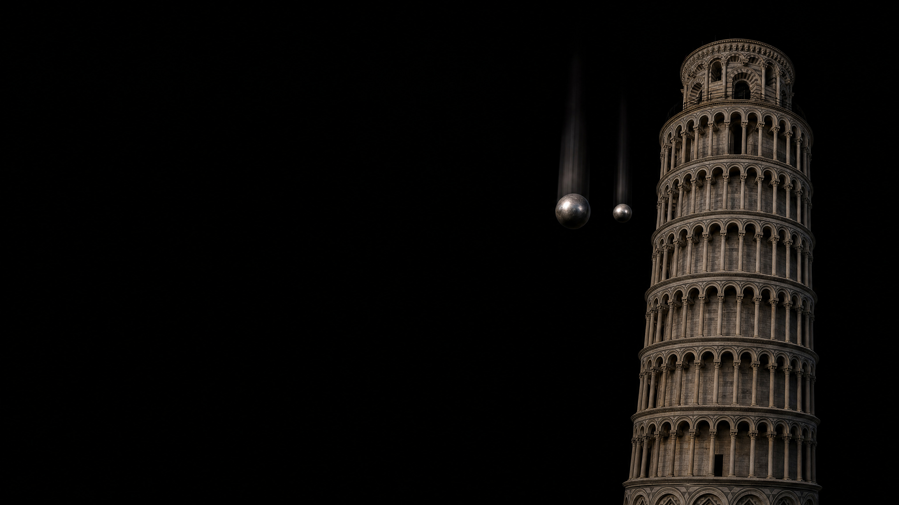

which one
lands first?
image: ai-generated (gpt-image-2)
three ways to answer the same question
an explanation only claims something, while a measurement can decide it.
turn a claim into a test
write the expectation before you measure.
this concept lives at the input
the sensor returns four numbers
your eyes see a colour, but the program only sees four numbers.
sent is not measured
the numbers differ from what was sent, and that is normal, not a defect.
measure the dark first
which value is true?
how many readings per decision?
averaging lowers the error rate, but you pay for it with speed.
a series reveals what one reading hides
report the centre and the spread.
the knob: integration time
a longer window gives calmer readings,
a shorter one gives them faster.
where the best trade-off lies for your setup, only a measurement can tell.
two teams improve their result
change one variable at a time.
what makes a measurement series
a repeatable result is worth more than an impressive one.
luck or skill?
calibrate, then classify
when the assistant and the data disagree
if you did not measure it,
you do not know it.
one reading is not a measurement series.